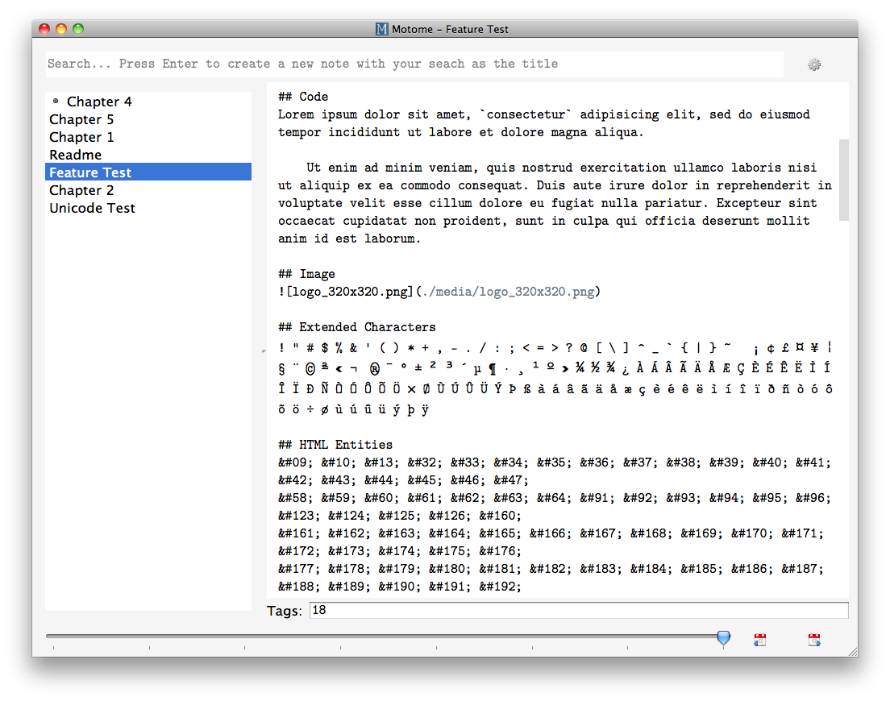
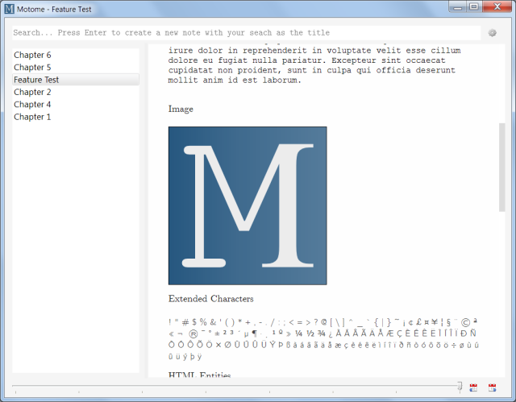
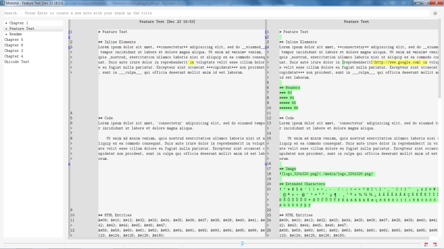

Motome
/mōtōmē/
Cross platform note taking application with note histories and markdown rendering
Description
Motome is a note taking and information aggregation application inspired by many other note taking programs.
Some of its features are:
- Note search and creation from a single input
- Markdown rendering
- History tracking and the ability to see diffs
- Note tagging
- Auto-saves notes in the background
- Keyboard shortcuts
- Local storage and link to any file type
- Drag and drop files to create links
The motivation behind Motome:
- Notes are yours and stored on the machine of your choosing
- Notes are stored in easily accessible text files, not in a database or proprietary format
- Notes can have histories
- Notes can be more than just text by including additional data files like images, pdfs, spreadsheets, and rich text documents (the inspiration for this comes from bigger note taking apps like Evernote and OneNote)
Motome is developed with Python and Qt and is cross platform.
Released under an open BSD licence. Please see the LICENSE file.
Screenshots

Dependencies
- A Python installation (currently known to work with ver. 2.7)
- The PySide Qt framework
- Markdown for Python
Installation
Currently Motome is in a pre-release state and there are no OS specific binaries and no automated installation. The easiest way to get Motome is to make sure you have the dependencies installed and either clone the git repository or download the zip file from github and run:
python setup.py installIf the python/Scripts folder is in you path then you should be able to start the application by typing
Motomeat a command prompt.
First Run
When running Motome for the first time you will be shown the settings dialog where you need to pick a directory to store your notes in.

The application will then create a .Motome folder in your home directory to store configuration settings and you can always change your settings by using the small gear icon next to the search input.
Using Motome
Creating a new note
Using the search input, type in the title of your new note and press Enter. This will create a new text document with the title set as both the file name and the initial content. If you include #hashtags in the title text they will be converted to tag values and attached to your note.
#blogidea The 99 Habits of Highly Effective Procrastinators
You can easily switch to the search input using Ctrl-F or Ctrl-N. Pressing Esc will clear the search text.
Searching you notes
Search results are automatically updated as you type. Motome will show you any notes that contain your search words, ordered by relevancy. You can use #hashtag words in the search to limit results to the relevant tags. To exclude any words or hashtags from your search use a -minus sign in front of the term to exclude.
You can easily switch to the search input using Ctrl-F or Ctrl-N. Pressing Esc will clear the search text and show all your notes in the note list.
Pinning notes
For notes you use often Motome provides the ability to pin them to the top of the notes list for easy access. Double-clicking on any note in the notes list will pin or unpin it. Alternately your can use the keyboard shortcut Ctrl-Shift-P to pin/unpin the current note.
Switching between views
Motome is very keyboard focused, to the point that accessing the Preview and Diff views requires using Ctrl-P and Ctrl-D respectively. To get back to the Editor press Ctrl-E. The preview pane contains an HTML rendering of the text entered in the Editor pane. The text is passed through a markdown parser before being shown in the Preview, so any markdown formatting will be converted to HTML.
Here are some additional useful keyboard shortcuts:
-
Ctrl-T- Switch to the Tags editor -
Ctrl-[- Move up one note in the notes list -
Ctrl-]- Move down one note in the notes list -
Ctrl-Shift-U- Add the current date and time at the cursor location
Explanation of all the keyboard shortcuts is available in the Keyboard Shortcuts tab in the Settings dialog.
Note history
Motome autosaves your notes in the background and by default will save and record the current text to the note history when you press Ctrl-S. This feature can be turned off in the Settings dialog, but you can still tell Motome to save and record using Ctrl-R.
The full text of each historical note is stored in a .zip archive with the filename set as the date and time the record was taken.
A note's history can easily be browsed using the slider and buttons at the bottom of the window. The content of the historical record will be shown in the Editor and Preview panes and the difference between the historical note and the current text will be shown in the Diff pane. Toggling between the panes can be done using the Ctrl-E, Ctrl-P, and Ctrl-D keyboard shortcuts. Moving forward and backward in the history can be done with the Ctrl-< and Ctrl-> shortcuts.
Including files
Motome makes it easy to include more than just text information in your notes. By dragging and dropping a file in the Editor or pressing Ctrl-Shift-K you can insert a link to a local data file at the current cursor location. This file can be of any type and can be opened by clicking on the hyperlink in the Editor or Preview panes. The file will be opened in whatever application your operating system has assigned to that file type.
Motome stores a copy of any files you attach to a note in the /media folder inside your note directory.
A note on the Motome text files
The text files Motome writes are slightly unique. You should be able to read and edit them just like any other text file but they have a few important features that Motome uses:
- Motome saves the note files using UTF-8 encoding
- There is a special ASCII control charater called End-of-text (␃) that Motome uses to delineate note content from note metadata. This is represented in the text file by a UTF code point U+0003 and may show up in other text editors as a strange looking character. All the text in the metadata section is editable just like in a normal text file and as long as you keep the ␃ character Motome will know what to do.
Bugs, Feedback & Helping Out
Contributions and feedback are greatly appreciated and welcome. Please see the CONTRIBUTING file to see how you can help.